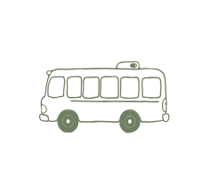
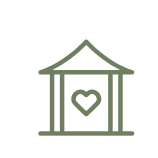

23 de mayo de 2026
Desde las 13:30 h
Zibá José María Eventos – Segovia
Programación

Autobús

Ceremonia
Cóctel
Comida
Fiesta
Autobús
← Desliza para ver todos los eventos →
Habrá autobuses de ida y vuelta desde Cantalejo. Hora a determinar.